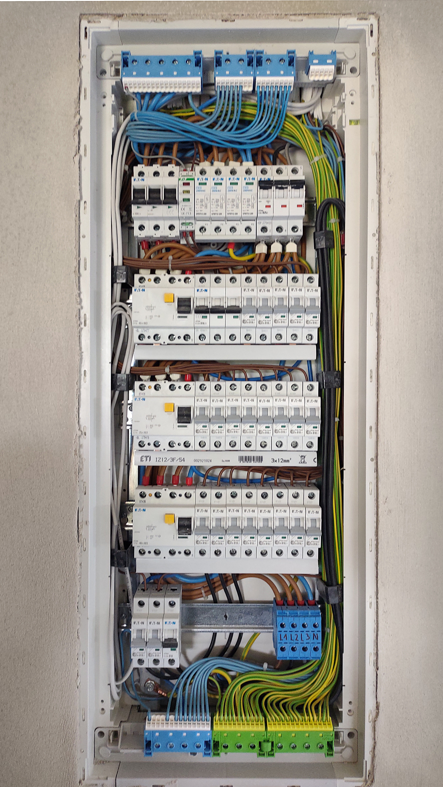
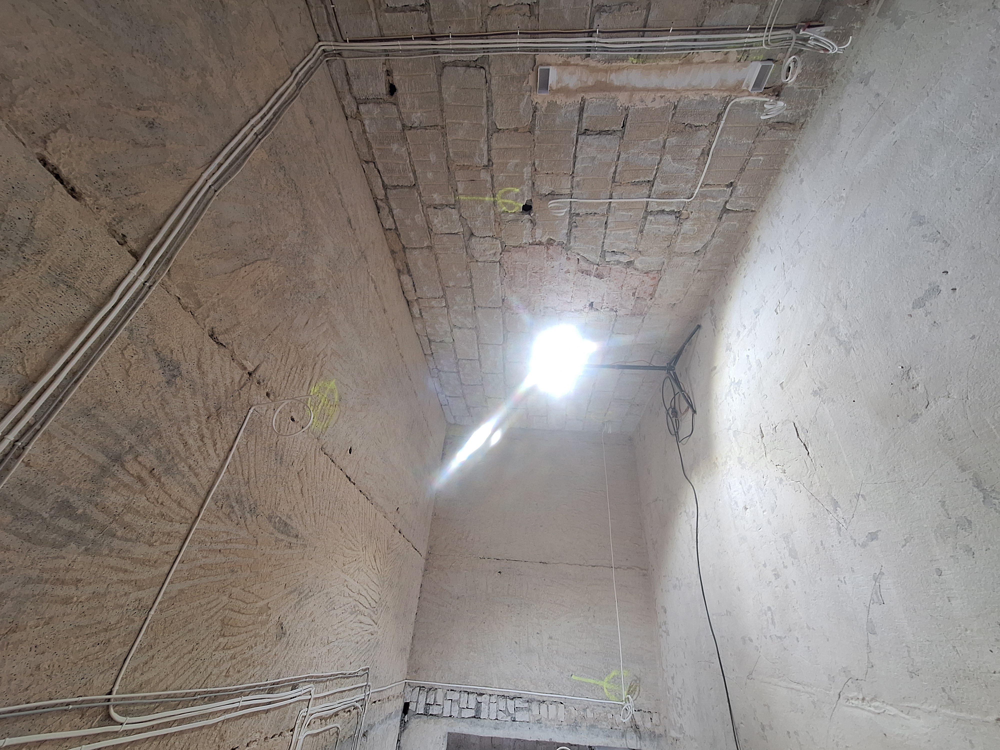
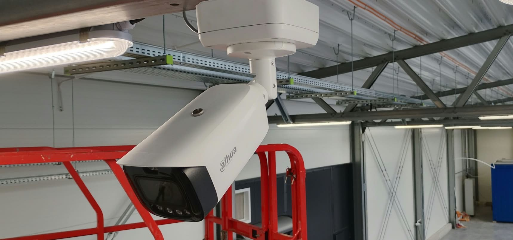

Instalacje elektryczne
Wykonujemy instalacje elektryczne w domach, mieszkaniach i lokalach użytkowych. Zajmujemy się montażem i modernizacją rozdzielnic, instalacją oświetlenia, gniazd oraz przygotowaniem obwodów pod urządzenia elektryczne.
Elektryk MG
Wykonujemy nowe instalacje elektryczne i wymiany instalacji w mieszkaniach oraz domach. Modernizujemy rozdzielnice, wykonujemy przeróbki i naprawy elektryczne. Montujemy także monitoring CCTV, alarmy, domofony i kontrolę dostępu.
Obsługujemy klientów indywidualnych i firmy na terenie Lublina oraz okolic.
Elektryka i zabezpieczenia
Wykonujemy instalacje elektryczne w domach, mieszkaniach i lokalach użytkowych. Zajmujemy się montażem i modernizacją rozdzielnic, instalacją oświetlenia, gniazd oraz przygotowaniem obwodów pod urządzenia elektryczne.
Wymieniamy stare instalacje elektryczne w mieszkaniach i domach, wykonujemy przeróbki w remontowanych i nowych lokalach oraz usuwamy usterki elektryczne. Realizujemy zarówno pojedyncze prace, jak i kompleksowe modernizacje.
Projektujemy rozwiązania i wykonujemy instalacje monitoringu CCTV, systemów alarmowych, domofonów, wideodomofonów oraz kontroli dostępu. Zajmujemy się także konfiguracją, uruchomieniem i serwisem urządzeń.
Przykłady naszych prac
Instalacje elektryczne, modernizacje i systemy zabezpieczeń dla domów, mieszkań i obiektów firmowych. Zobacz przykłady naszych prac.

Wykonanie nowej instalacji elektrycznej wraz z montażem i okablowaniem rozdzielnicy.

Wymiana okablowania i przygotowanie punktów elektrycznych w mieszkaniu w starszym budownictwie.

Montaż i uruchomienie systemu monitoringu.
Elektryk MG
Elektryk MG to firma świadcząca usługi elektryczne i instalacje systemów zabezpieczeń na terenie Lublina i okolic. Realizujemy zarówno drobne zlecenia, jak i większe prace instalacyjne oraz modernizacyjne.
Porozmawiajmy o zakresie prac
Skontaktuj się z nami, opisz zakres prac lub prześlij zdjęcia instalacji. Omówimy możliwości realizacji i ustalimy dogodny termin.
781 526 129